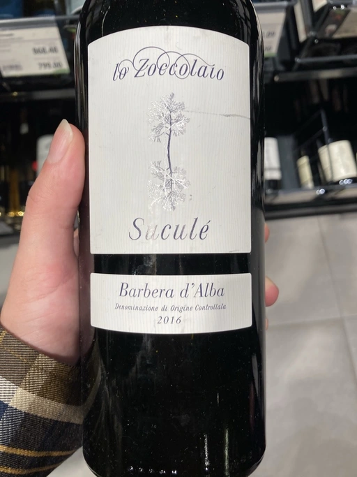

- Type
- Red Still, Dry
- Producer
- Lo Zoccolaio
- Vintage
- 2016
- Location
- Italy, Barbera d’Alba DOC
- Grapes
- Barbera
- Alcohol
- 14.5
- Sugar
- 2
- Price
- 439 UAH
- Cellar
- N/A
Reviews notes
Бароло – сердце пьемонтского вина. Его величественные холмы внесены в список объектов всемирного наследие ЮНЕСКО. Lo Zoccolaio - это небольшая винодельня, расположенная на холме Брикко-дель-Бароло в одноименной коммуне. Здесь вино - это не просто продукт, товар или мода. Каждая бутылка – это дань традициям. «Ravera Riserva» выдерживалось 18 месяцев во французских дубовых бочках. «Sucule» - прекрасное соотношение цена/качество. В аромате оттенки сочной вишни, шоколада, кофе, черносмородинового ликера. Вино полнотелое, с фруктовым характером. Прекрасный современный стиль из Пьемонта!
Goodwine
Ratings
2020-10-22 - 8.00
Definitely not the typical Barbera I am used to (aside from those by Cascina Tavijn). In the blind tasting I would think about twisted Australian Shiraz thanks to the pronounced licorique and chocolate notes, and overall viscosity. But then in addition to black fruits there are sour cherry, vanilla and coffee beans. In the taste it is much more fresh, with some good gastronomic acidity. Long and evolving finish. That’s a really interesting Barbra with great QPR. Go ahead and give it a try!